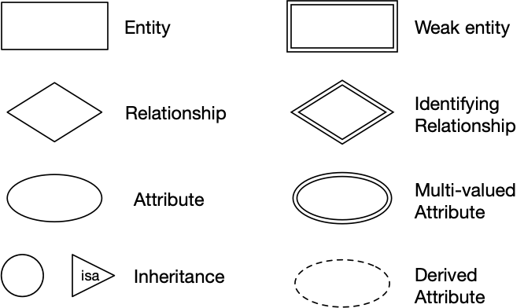
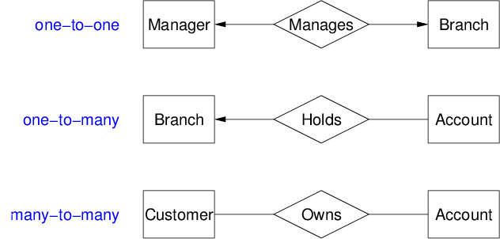
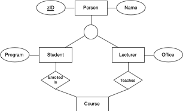
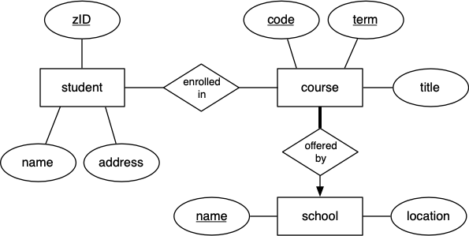

COMP3311 Week 1 Tuesday Lecture
COMP3311 22T3 ♢ Week 1 Tuesday Lecture ♢ [0/17]
- Entity-Relationship (ER) Model (cont)
- Relational Model
- SQL Data Definition Language (DDL)
- Mapping ER → SQL
COMP3311 22T3 ♢ Week 1 Tuesday Lecture ♢ [1/17]
Using PostgreSQL on vxdb2 ...
-
ssh to vxdb2
- set up environment (
PGDATA)
- start PostgreSQL server
p1
- ... play with PostgreSQL ...
- stop PostgreSQL server
p0
Lectures ... see Lecture Material link
- Slides ... available before lecture
- Video ... available > 3 hours after lecture (Echo360, YouTube)
- Data ... what I do in the exercises, available after lecture
COMP3311 22T3 ♢ Week 1 Tuesday Lecture ♢ [2/17]
ER models give a visual representation of database structure
Primary components
- Entities = objects of interest in the scenario
- Relationships = associations between entities
- Attributes = properties of entities
ER models don't capture all information from the scenario
- e.g. types and constraints on attribute values
ER models are useful as a step towards an SQL schema
COMP3311 22T3 ♢ Week 1 Tuesday Lecture ♢ [3/17]
❖ ER Model (recap) (cont) | |
ER design elements:

COMP3311 22T3 ♢ Week 1 Tuesday Lecture ♢ [4/17]
❖ ER Model (recap) (cont) | |
Relationships:

Thick line = total participation; thin line = partial participation
COMP3311 22T3 ♢ Week 1 Tuesday Lecture ♢ [5/17]
COMP3311 22T3 ♢ Week 1 Tuesday Lecture ♢ [6/17]
COMP3311 22T3 ♢ Week 1 Tuesday Lecture ♢ [7/17]
COMP3311 22T3 ♢ Week 1 Tuesday Lecture ♢ [8/17]
ER also implements super-class / sub-class hierarchies
- both super- and sub-classes consist of entities
- super-class has common properties of all entities in hierarchy
- sub-classes can add extra properties to specialise
- entities in super-class may have corresponding entities in sub-class
- sub-classes can be
- disjoint ... entities are members of only one sub-class
- overlapping ... entities can be members of several sub-classes
COMP3311 22T3 ♢ Week 1 Tuesday Lecture ♢ [9/17]
❖ Exercise: Student/Lecturer Class Hierarchy | |
Modify the minimal ER class hierachy to represent
- some people in the database are students or lecturers
- all people in the database are students or lecturers
- all people in the database are students XOR lecturers
- some people in the database are students XOR lecturers

COMP3311 22T3 ♢ Week 1 Tuesday Lecture ♢ [10/17]
A complete ER model should ...
- include all entities and their attributes
- identify key attributes
- capture accurate semantics for all relationships
- include class hierarchies where appropriate
There are frequently different kinds of people (⇒ sub-classes)
COMP3311 22T3 ♢ Week 1 Tuesday Lecture ♢ [11/17]
❖ Exercise: Medical Information | |
Develop an ER model for the following scenario:
- Patients are identified by an SSN, and their names, addresses and ages
must be recorded.
- Doctors are identified by an SSN. For each doctor, the name, specialty
and years of experience must be recorded.
- A pharmacist is identified by an SSN, he/she can only work for one
pharmacy. For each pharmacist, their name must be recorded.
- Each pharmacy has a name, address and phone number. A pharmacy must have
a manager, who is a pharmacist.
- For each drug, the trade name and formula must be recorded.
- Every patient has a primary physician. Every doctor has at least one
patient.
- Each pharmacy sells several drugs, and has a price for each. A drug
could be sold at several pharmacies, and the price could vary between
pharmacies.
- Doctors prescribe drugs for patients. A doctor could prescribe one or
more drugs for several patients, and a patient could obtain prescriptions
from several doctors. Each prescription has a date and quantity associated
with it.
COMP3311 22T3 ♢ Week 1 Tuesday Lecture ♢ [12/17]
❖ Exercise: Book Publishing Scenario | |
Develop an ER model for the following scenario:
- for each person, we need to record their tax file number (TFN),
their real name, and their address
- authors write books, and may publish books using a "pen-name"
(a name, different to their real name, which they use as author of books);
they may use mutiple pen-names
- editors ensure that books are written in a manner that is
suitable for publication
- every editor works for just one publisher
- editors and authors have quite different skills; someone who is
an editor cannot be an author, and vice versa
- a book may have several authors, just one author, or no authors
(published anonymously)
- every book has one editor assigned to it, who liaises with the
author(s) in getting the book ready for publication
- each book has a title, and an edition number (e.g. 1st, 2nd, 3rd)
- each published book is assigned a unique 13-digit number (its ISBN);
different editions of the same book will have different ISBNs
- publishers are companies that publish (market/distribute) books
- each publisher is required to have a unique
Australian business number (ABN)
- a publisher also has a name and address that need to be recorded
- a particular edition of a book is published by exactly one publisher
COMP3311 22T3 ♢ Week 1 Tuesday Lecture ♢ [13/17]
Entity-relationship (ER) model
- world is modelled via entities, relationships, attributes
Relational model
- world is modelled via tuples, relations, constraints
SQL schemas
- a good approximation of the relational model
Also ODL, UML, and a variety of others ... but not in this course.
COMP3311 22T3 ♢ Week 1 Tuesday Lecture ♢ [14/17]
Tuples are collections of values (cf. Python tuples, C structs)
- e.g. (1234567, John Smith, BE, SENG, 75.2)
Relations are sets of tuples
- e.g. { (1,2,3), (3,2,1), (1,3,5), (2,4,6) }
Constraints are logical statements on valid data
- e.g. zID is unique and 0 ≤ WAM ≤ 100
Tuples correspond to entities
Relations correspond to entity sets and relationships
COMP3311 22T3 ♢ Week 1 Tuesday Lecture ♢ [15/17]
❖ Relational Model (cont) | |
Different kinds of constraints
- unique = value of attribute is unique in relation
- key = chosen unique attribute to distinguish tuples
- domain = type of attribute, restrictions within type
- referential integrity = foreign key
- tuple in relation R has attribute F
- whose value corresponds to key attribute K in relation S
COMP3311 22T3 ♢ Week 1 Tuesday Lecture ♢ [16/17]
❖ Exercise: ER-to-relational Mapping | |
Convert this ER model to a relational model

COMP3311 22T3 ♢ Week 1 Tuesday Lecture ♢ [17/17]
Produced: 17 Feb 2023